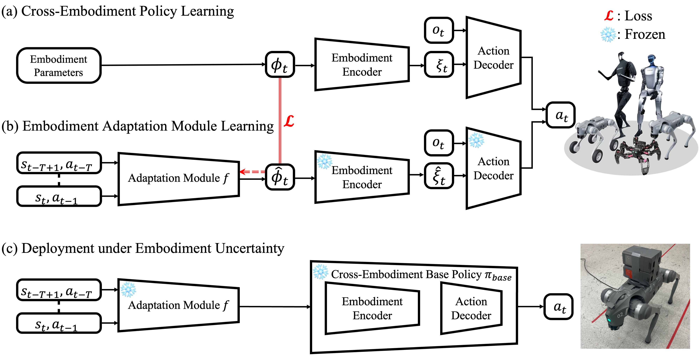

Abstract
Humans readily adapt their movements as their bodies change through aging, injury, or load carrying, but learning-based robot policies often break when hardware properties shift. We introduce an online embodiment adaptation framework for quadrupedal locomotion that infers embodiment parameters from short interaction histories and conditions control on the inferred hardware state. Our method pairs a generalist policy trained under embodiment randomization with a lightweight adaptation module that identifies physical changes within half a second. We evaluate two representative forms of embodiment variation: joint-range constraints and trunk-mass changes, corresponding to joint-level kinematic degradation and body-level dynamic variation. In simulation, the module accurately estimates these changes and enables closed-loop control that substantially outperforms policies conditioned directly on interaction history. On a real Unitree Go2 robot, our system maintains stable locomotion under severe instances of the evaluated changes, including a fully locked leg and a 5 kg payload, where non-adaptive methods fail. These results demonstrate the practicality of explicit online embodiment identification for rapid adaptation to joint-limit and payload-mass changes, and provide a step toward handling broader forms of uncertain, degraded, or changing robot hardware.
Problem
A cross-embodiment policy can be trained over many robot bodies, yet the true embodiment at test time may be unknown or may change: joint locking, payload addition, motor failure, missing components, and other hardware differences. The problem is how to control well when embodiment itself is uncertain—the setting summarized in the figure below.

Method
A base policy is trained across randomized embodiments with access to ground-truth embodiment descriptors. We then train an adaptation module to infer embodiment parameters from a short interaction history so the base policy can condition on them.

Simulation Performance
Below we plot mean episode return and episode length versus joint limit scaling and trunk mass offset for different policies. The oracle and no adaptation policies mark the performance bounds. Policies with adaptation—both explicit and latent adaptation—match the oracle policy (which receives ground-truth embodiment descriptions) and largely outperform the no adaptation policy (which does not).


Real-World Performance
Experiment 1
On Unitree Go2, we compare policies with and without explicit adaptation under two conditions: (1) front-right leg joint locking scaled to 0.3, and (2) a 5.0 kg trunk payload. These embodiment uncertainties are introduced at the start of the episode. We form the following four experiments: (a) With adaptation under joint limit modification. (b) Without adaptation under joint limit modification. (c) With adaptation under payload mass addition. (d) Without adaptation under payload mass addition. Our explicit adaptation policy enables walking with one leg locked or carrying a heavy load; the base policy fails catastrophically in these settings.
Below: image streams and video.

Experiment 2
When embodiment changes mid-episode (e.g., joint range suddenly reduced or payload added), the adaptation module updates within roughly half a second; the policy then switches to a gait consistent with the new body. Below: representative frame sequences from selected trials, followed by a high-resolution qualitative video.

Takeaways
- Short-horizon histories suffice for fast embodiment identification, enabling adaptation within ≈0.5 s.
- Explicit and latent adaptation both improve over a non-adaptive base under embodiment drift and noise.
- Real-world experiments show large advantages of online adaptation over the base policy under joint locking and payload perturbations.
BibTeX
@misc{li2026rapid,
title={Rapid Embodiment Adaptation for Quadrupedal Locomotion},
author={Li, Dichen and Ai, Bo and Bohlinger, Nico and Peters, Jan and Christensen, Henrik I. and Su, Hao},
year={2026},
note={Preprint}
}